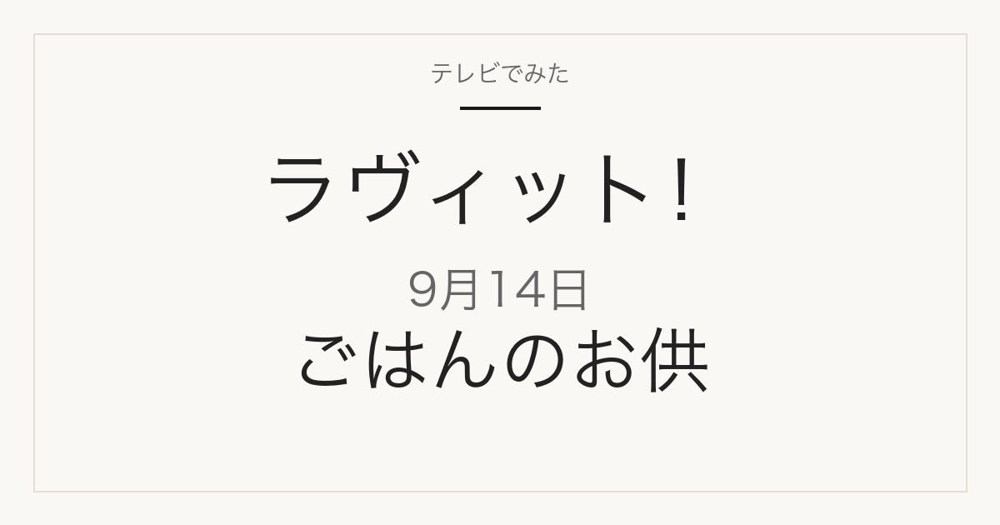

この記事には広告・アフィリエイトリンクが含まれる場合があります。
2026年9月14日（月）放送
ラヴィット！
芸能人が愛する「ごはんのお供」
ごはん大好き芸能人が愛するごはんのお供が登場
これは放送前の記事です。番組表と番組公式で確認できた内容だけを載せています。商品名・メーカー・価格はまだ発表されていません。放送後、確認できたものから同じページに追記します。
紹介予定の内容を見る
特集概要
ごはんのお供が3つの企画のひとつ
商品名は未発表
この回は3つの企画が予定されています。商品名・店名・価格はいずれも番組表と番組公式に記載がありません。
- 「ごはんのお供」普及委員会 — ごはんが大好きな芸能人が、自分の愛するごはんのお供を持ち寄ります。この回でいちばん商品が出そうな企画です
- リズムゲーム — モナキのヒット曲に合わせて対戦します
- 名曲クイズ — 昭和のヒットソングを歌って答えます
番組表の見出しには「VIVANTブルーウォーカー参戦！」とあります。
出典は2026年9月14日のTBS番組表 8時枠（2026年9月14日確認）です。番組内容は変更になる場合があります。
出演
月曜のレギュラー
MCは川島明さん（麒麟）と田村真子さん（TBSアナウンサー）。番組公式によると、月曜のレギュラーは次の通りです。
- 馬場裕之さん（ロバート）
- ぼる塾（きりやはるかさん・あんりさん・田辺智加さん）
- 本並健治さん＆丸山桂里奈さん
- なすなかにし（中西茂樹さん・那須晃行さん）※隔週
番組公式サイトの記載によります。実際の出演は放送で確認します。
見たあとに
気になった「ごはんのお供」を探すには
「ごはんのお供」は、商品名さえ分かれば通販でそのまま買えるものがほとんどです。ただ放送中は商品名が一瞬で流れてしまい、あとから思い出せないことがよくあります。
このページは同じURLのまま更新します。放送を見ながらブックマークしておけば、あとで商品名・メーカー・価格を確認できます。
載せるのは、番組公式かメーカーの公式情報で確認できたものだけです。SNSの投稿だけを根拠にした断定はしません。
出典
当サイトは番組公式サイトではありません。放送内容は変更になる場合があります。